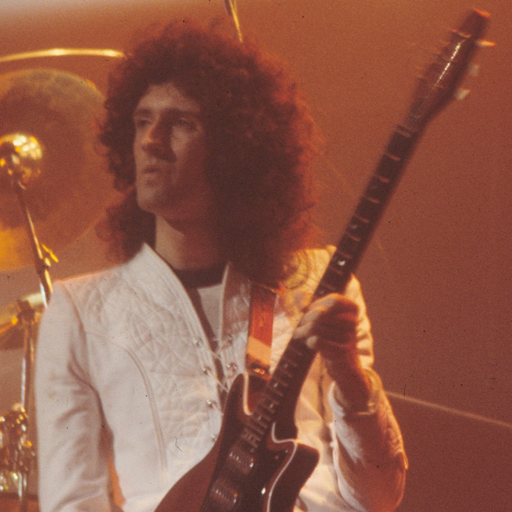
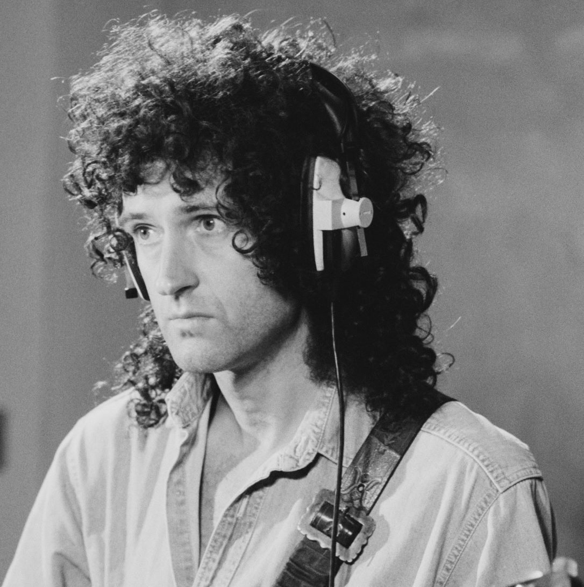
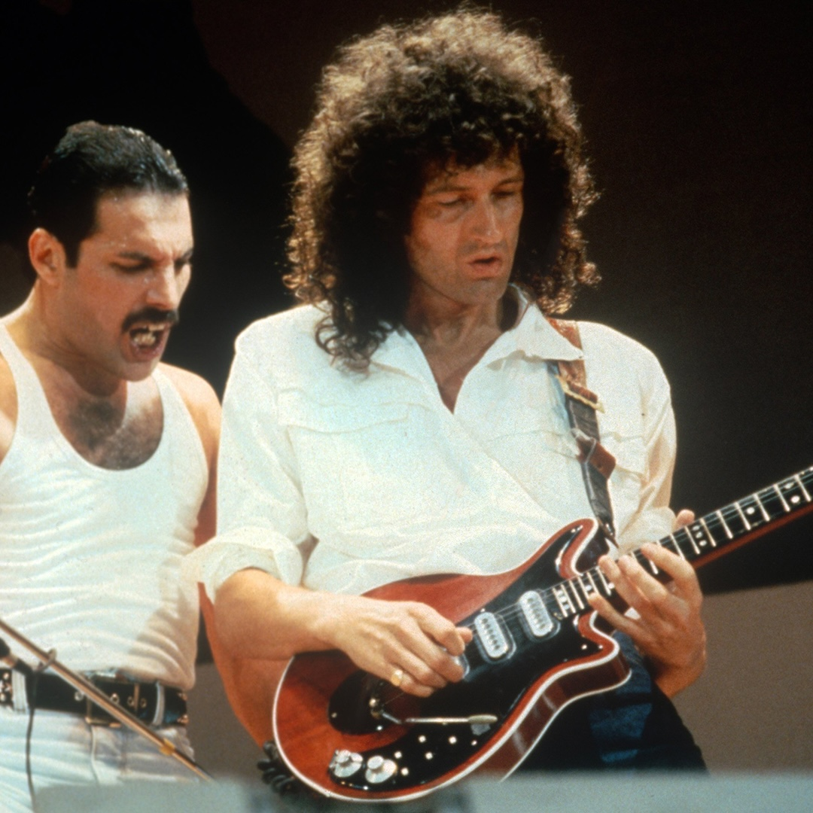

Brian May
While Freddie Mercury was the flamboyant soul of Queen, Sir Brian May was its sonic architect. A man of quiet intensity and immense intellectual depth, May is one of the few individuals in history to successfully balance the life of a world-class rock guitarist with that of a professional astrophysicist. To understand Queen is to understand the unique, orchestral roar of Brian May’s guitar.
A Guitar Like No Other
The most defining element of Brian May’s career is his instrument, the "Red Special." Unlike other rock stars who bought their guitars from shops, Brian and his father, Harold, built his from scratch in 1963.
They used wood from an 18th-century fireplace mantel, motorcycle valve springs, and a knitting needle.
To get his signature "biting" tone, Brian famously eschews plastic picks, opting instead to play with a sixpence coin. This homemade guitar has been his primary instrument for over 60 years, creating a sound that is entirely inimitable.



The Orchestral Guitarist
May’s contribution to Queen was his ability to treat the guitar like a choir. In the era before synthesizers were common, Brian used a "Deacy Amp" (built by bassist John Deacon) and multi-track recording to layer dozens of guitar parts. This created the "guitar orchestrations" heard on tracks like "Killer Queen" and "Bohemian Rhapsody," where the guitar mimics the sound of woodwinds, brass, and operatic vocals.
"We Will Rock You": The Science of a Hit
Brian May is the songwriter behind some of the most recognizable anthems in human history. His most famous creation, "We Will Rock You," was born from a desire to involve the audience. Drawing on his scientific mind, he calculated the exact delays needed for thousands of people stomping and clapping in a stadium to create a massive, unified sound without it turning into acoustic chaos.
Dr. May: From Rock Stars to Real Stars
In the early 1970s, Brian put his PhD in Astrophysics on hold to pursue Queen. Decades later, he returned to his studies, proving that it is never too late to follow a passion.
In 2007, he finally earned his PhD from Imperial College London, submitting a thesis on zodiacal dust.
Since then, he has worked as a science team collaborator with NASA’s New Horizons mission (Pluto) and the OSIRIS-REx mission, helping to create 3D stereo images of distant asteroids.
The Gentle Knight and Activist
In 2023, Brian was knighted by King Charles III, becoming Sir Brian May. Beyond music and science, he is a fierce advocate for animal rights. Through his organization, Save Me Trust, he campaigns tirelessly against fox hunting and the culling of badgers in the UK.
Brian May in 2026
Today, Sir Brian remains the guardian of the Queen legacy. Whether he is performing on top of Buckingham Palace, advocating for wildlife, or analyzing data from deep space, he remains a symbol of the "Renaissance Man"—proving that one can reach for the stars both through a telescope and a stack of amplifiers.